Introduction
Before any flight tests could be conducted with a chordwise wing shifting robot, the obvious first step was to design and construct the robot. Designing the robot has been the most time intensive part of this research project so far. Having never designed a mechanical system before, I had a lot to learn a lot along the way particularly regarding constructing models in SolidWorks computer-aided design (CAD) and 3D printing plastic prototypes.
To start off the design, I sketched a highly simplified 2D model of the robot. A robot with a body and two wings that could slide chordwise along the robot's length. Although exceedingly simple, this sketch is useful in demonstrating the outwards functionality of the robot without the internal complexities that make this behavior possible.
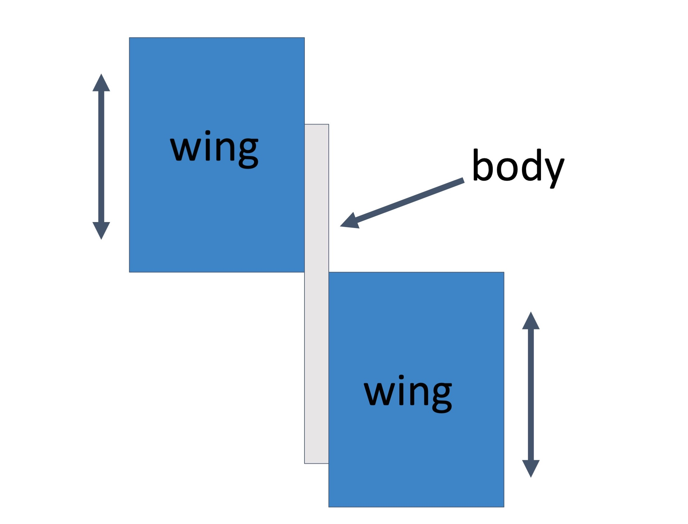Chordwise Wing Shift Concept
First Prototype
To begin the design in SolidWorks, I decided to start off focusing on the wings—the most important structure from a flight perspective. I came up with a simple model for one half of the robot body having a forelimb and hindlimb connected to a body piece. I used dimensions for the forelimb and hindlimb structure similar to the anatomical limb measurements of the Northern Flying Squirrel. I imagined wings cound then be mounted on top of or around these limbs. This was a start. However, the more pressing question I realized was not what the wings would look like exactly but how the robot would actually do the chordwise wing shifting.
First Prototype
Second Prototype
Although I didn't know it had a name at the time, the mechanical structure I wanted to transform the rotary motion of a motor into linear motion of the wings was a rack and pinion. The basic idea is that a small spur gear (the pinion) is used to drive a larger toothed rectangular piece (the rack) back and forth. This structure is quite common and taught in engineering design as the "go-to" mechanism when translating rotary motion to linear motion. I would learn about it a few weeks later in my engineering design class.
In addition to the chordwise wing shifting ability, another important design consideration was making the robot a flexible testing rig rather than a high performing flier. The point of this robot is to study gliding flight at a level that can't be studied from animals by manipulating the robot in a controlled environment. To this end, the robot should be capable of sliding its wings across a large distance, holding the wings at different dihedral/anhedral angles, and holding wings of different shapes and sizes.
To achieve different dihedral/anhedral angles, I decided to add a block with T-slots at different angles where the wings could be slid into place. In this configuration the dihedral/anhedral angles of the wing could not be changed dynamically during flight and would instead be set before flight. Nonetheless, the effect of using different dihedral/anhedral angles could be tested over the course of many trials. To achieve dynamic adjustment of dihedral/anhedral angles is of course possible, but it would require more motors. Motors are heavy and large. Too many and the robot becomes a ballistic projectile rather than a graceful glider. One could make the argument that additional degrees of freedom (DOFs) are attainable without the use of motors such as shape memory alloy wires or some other smart actuator, but that was a rabbit hole I didn't want to go down yet.
To design the robot to be capable of holding wings of different shapes and sizes, I added a piece with many sets of holes so that the limbs could be locked into place at different orientations and positions along the robot body. Additionally, I added telescoping arms to the end of each limb so that they could be extended when desired. Like the dihedral/anhedral angles, I intended for these DOFs to be changed manually prior to running an experiment.
Second Prototype
Third Prototype
Although I had decided on using the rack and pinion to translate the rotary motion of the motor to the linear motion of the wings, I wasn't sure where the motor would actually be located to make this happen. Mating the motor shaft directly to the pinion gear would result in a tall body, likely producing such significant drag that the robot would end up falling rather than gliding. Ideally, the motors—one for each wing— would be in line with the wings so that they could be contained inside a narrow compact body. To do this, I decided to use a worm on the motor shaft to drive the adjacent pinion spur gear which then drove the rack.
Another change I made was to add gearing between the rack and limb connector piece so that the dihedral/anhedral angle of the wings could be more well fine tuned than just the five different T-slots I had initially conceived. Additionally, Professor Woodward had warned me that T-slots were notoriously difficult to 3D print so that T-shaped can actually be easily moved in and out of the slots.
Having worked through a few preliminary designs and meeting with Professor Woodward to discuss them, I learned that the SolidWorks animation feature is a much better way to show off designs than screenshots or simple screen recordings. After watching a few YouTube videos on making basic animations in SolidWorks, I was able to put together some of my own showcasing the robot. I found that these animations were much more effective than screenshots or screen recordings at communicating my design when presenting to other people.
Third Prototype

Third Prototype with Limbs
The video below demonstrates how the many sets of holes on the limb connector piece can be used to mount the limbs at different orientations and positions along the robot body.
Third Prototype Wing Limb Connector
Fourth Prototype
The beauty of SolidWorks is being able to quickly sketch out ideas in 3D. Whether the resulting system will perform as you expect it to is not guaranteed from a nice looking design and will depend on the manufacturing process. As I began to consider this, I was worried that I couldn't model the gearing well enough that the gears would actually mesh. It's not too difficult to make nice looking gears, but functional gear train design is a science. I explored designing and then 3D printing gears to test them with my project making a goose automaton. One of the important lessons I learned during that process was how helpful defining part dimensions with equations is since it ensures everything scales correctly when one variable is changed. Despite having some success designing functional gear trains with the goose automaton, I decided to purchase injection-molded spur gears, racks, and worms for the robot. Not only were these gears professionally designed, but they also had much smoother surfaces compared to the gears I had 3D printed. The unique toothed piece attached to the limb connector to control the dihedral/anhedral angle would not be available commercially, so I decided to replace the wing angle adjustment mechanism with another.
Professor Woodward recommended using a four bar linkage. This was a term I'd never heard of before, but as I would learn through some later research it is a common mechanism in engineering design used to translate rotational motion to oscillatory motion. As the name suggests, there are four bars. One is fixed (gray link in animation below), another rotates continuously (red link in animation below), another rotates and translates—general plane motion (green link in animation below), and the other rotates back and forth (blue link in animation below). Making the blue link the wing, the dihedral/anhedral angle could be adjusted using such a mechanism. Nuts and bolts would fixe the linkages in place, but their position could be manually adjusted by loosening the fasteners, moving the links to the new desired position, and then resecuring the fasteners. Furthermore, later prototypes could dynamically change the dihedral/anhedral angle during flight by connecting a motor to the red link. I explored four bar linkage design for wing movement in my project making a butterfly automaton and was encouraged by my results.
Four Bar Linkage Test
Fourth Prototype with Four Bar Linkage
Fifth Prototype
Seeing as the rack was secured to the body by a T-shaped protuberance off the rack that fit into a T-shaped slot on the body, Professor Woodward was concerned that such a system would have too much friction and demand higher power motors than we could afford at that size scale. He recommended I instead look into some kind of bearing capture system to hold the rack in place, while still allowing it the one degree of freedom to freely slide back and forth along the robot's body. Looking into the smallest bearings I could find for sale on Amazon, I then made simplified models of these bearings in SolidWorks and implemented them in a bearing capture system to hold the rack.
Fifth Prototype
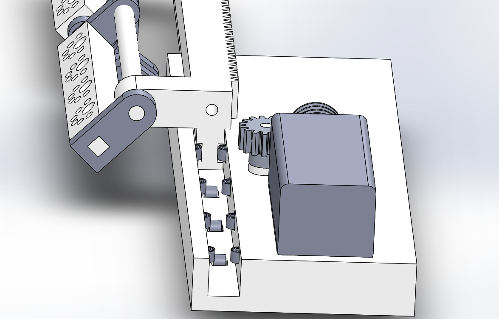Bearing Capture System in Fifth Prototype
Sixth Prototype
When it came to the bearing capture system, I had initially been a little trigger happy with bearing placement, adding unnecessary weight to the robot. Additionally, the bearings on either side of the rack holding it down would be rubbing against the rack if the rack was pushed upwards. To address these issues, I reduced the overall number of bearings and replaced the bearings on either side of the rack with bearings above the rack. By replacing the bearings at the side with bearings above the rack, I was ensuring that the rack would roll against the bearings when pushed upwards at the consequence that the rack would now rub against the sides if pushed into or away from the body. This decision was made based on the assumption that the forces pushing the rack up or down—resulting from aerodynamic forces acting on the wings—would be significantly greater than the forces pushing the rack from side to side. I also added a mirror robot half to include the full robot rather than just the half I had been modeling.
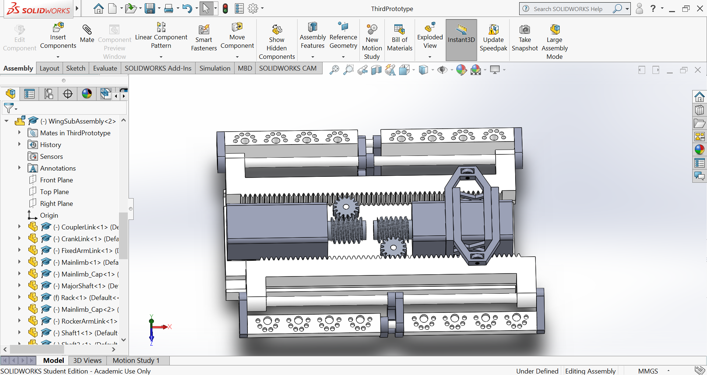Sixth Prototype
Seventh Prototype
In previous designs, I had been relying on push fit connections to mate interfacing parts. This had the benefit of being easy to implement in SolidWorks, but in a physical system wouldn't make for much of a sturdy robot. Instead, following Professor Woodward's recommendation I add some fasteners across the robot. I tried to limit the number of fasteners I added to as few as possible, since the additional mass resulting from even small nuts and bolts would quickly add up given how dense steel is relative to plastic.
The goal mass for the robot was 100 grams, although less was better as it would offer more flexibility in the design. To determine how well the current design met this goal, I entered in materials for all parts except the motors. The parts in white are using a SolidWorks ABS material, although I would later print prototypes using PLA. The black tubes are using a SolidWorks carbon fiber material, lighter and stronger than 3D printed ABS. The bearings and fasteners are using a conservatively dense steel from the SolidWorks steels. I assumed that the weight of each motor would be 10 g given that the product sheet for the Pololu micro metal gearmotors we were intending to use reported a weight of 9.5 g. In total, SolidWorks reported a mass of the full assembly of around 80 g. This was below the goal mass of 100 g, but the robot design still didn't include any of the necessary control electronics which would add additional mass to the system.
Seventh Prototype
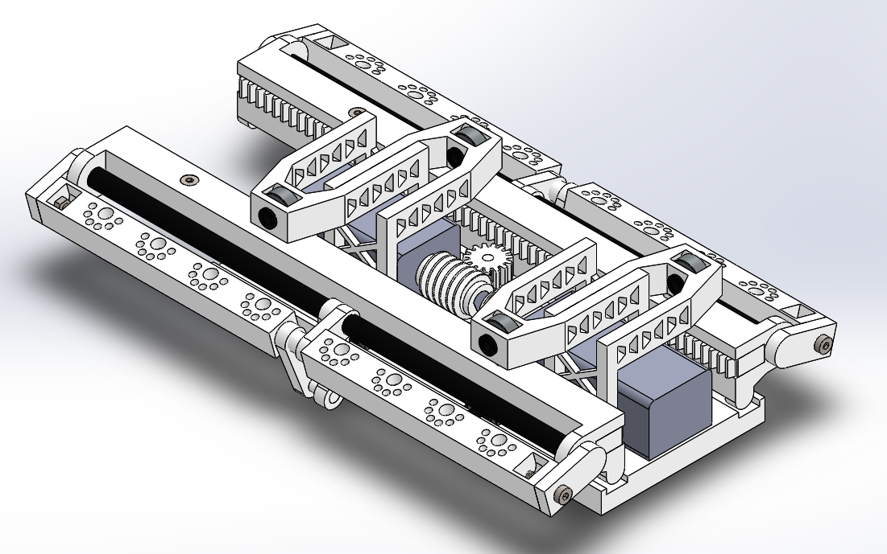Seventh Prototype - Isometric View
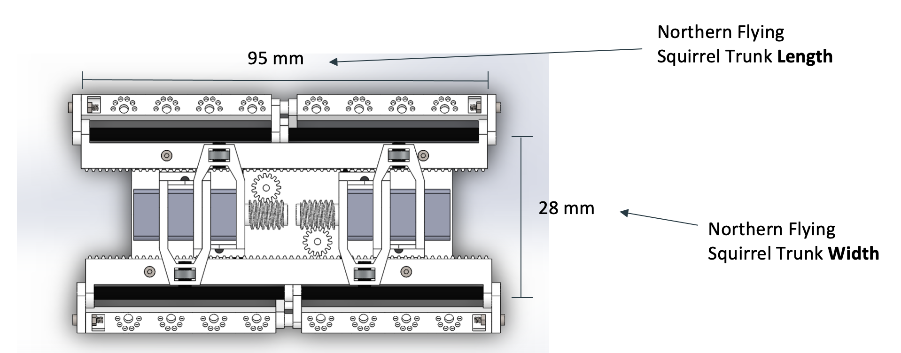Seventh Prototype - Top View
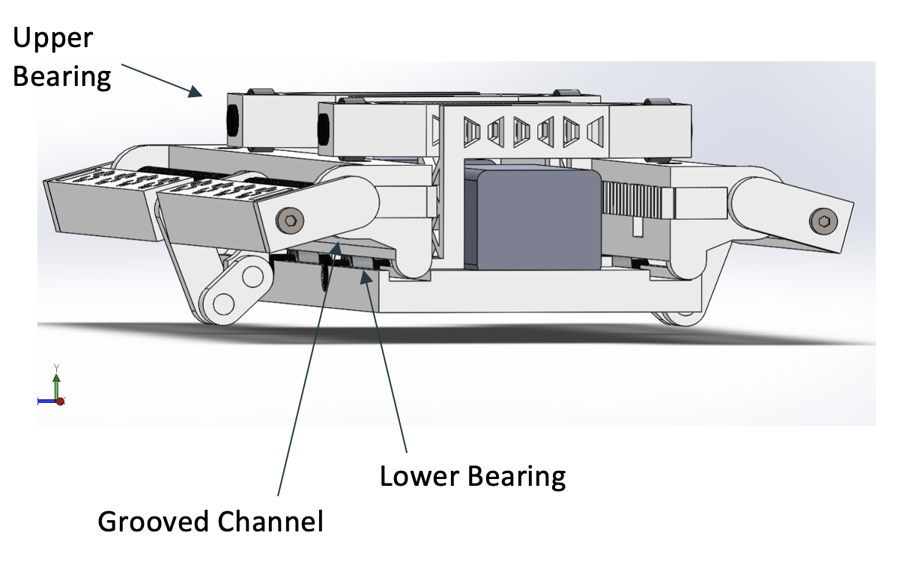Seventh Prototype Bearing Capture System
Eighth Prototype
Concerned with how blocky the robot was looking, Professor Woodward encouraged me to consider methods by which I could reduce the mass of parts while preserving the structural support they provided. To this end, I trimmed and thinned parts, added cutout patterns across part surfaces where I could afford it, and added fillets along part edges. I also removed a pair of the upper bearing capture pieces in the hopes that the robot would still be able to slide its wings back and forth with just the one pair of upper bearing capture pieces. With these revisions, the total mass was now down to 65 g.
As I began to consider more seriously what mass was essential to the robot function, I realized that I needed a better understanding of the exact motor geometry. Using a pair of calipers in the lab, I measured the dimensions of the Pololu micro metal gearmotor and used these dimensions to redefine the SolidWorks model for the motors. Note the rear extending shaft intended for the use of a magnetic encoder also sold by Pololu. The yellow block at the front of the motor represents the exterior dimensions of the gearbox.
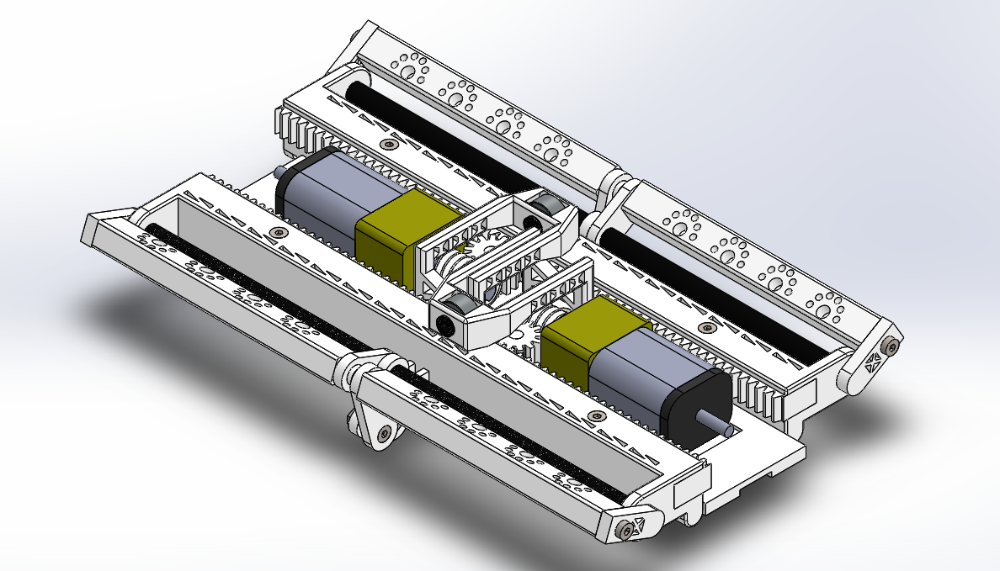Eighth Prototype - Isometric View
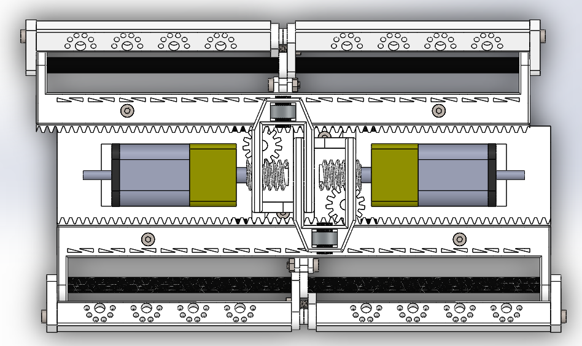Eighth Prototype - Top View
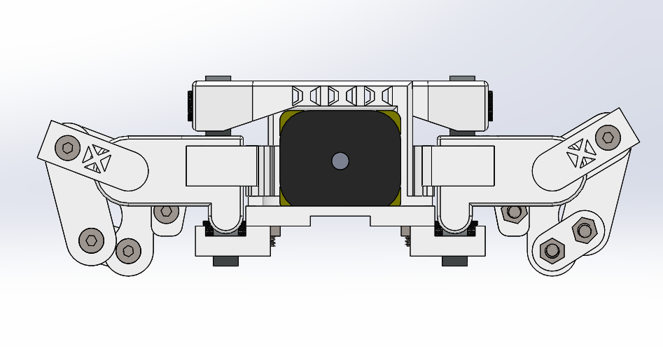Eighth Prototype - Front View
Ninth Prototype
Having reached some semblance of a working mechanical system, it was time to start thinking about how to implement the control electronics for the robot. These electronics included a magnetic encoder on each motor (Pololu #4761), a motor driver carrier board (Pololu #2130), a microcontroller board (Raspberry Pi Zero W), and a LiPo battery. Fortunately for me, Pololu had a wealth of resources on their products including 3D models of all the parts. With the exception of the motors which I wanted to leave simplified without the gearbox workings, I downloaded and included the models for the Pololu products. I was also able to find a model for the Raspberry Pi Zero W on the internet which I verified with some quick caliper measurements. As can be seen in the picture below, the Pi (in a black plastic protective case) is monstrous relative to the robot, taking almost as much space as the robot itself. Figuring out how to include this Pi in the robot body was something I needed to mull over.
After someone helpfully pointed out during a lab meeting that my motors weren't secured in place by any part of the body, I added some motor holder pieces that wrapped around the motor body and pressed up against the gear box. I added a bolt and nut for each spur gear to secure it in place while it rotated. I selected a bolt shaft that was significantly narrower than the shaft hole in the spur gear. This way the spur gear could rotate freely, but was capped by the bolt head so it didn't fly off. I also added some thin surfaces around the long carbon fiber shafts to enhance lift generation on the body.
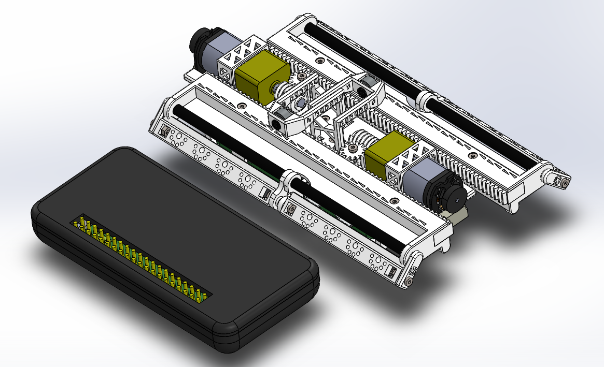Ninth Prototype with Raspberry Pi Zero W in Case for Scale
Tenth Prototype
To enclose the electronics and associated wiring, I decided to pursue a box type design underneath the robot body. By storing the electronics—particularly the LiPo battery—underneath the body, the robot is kept bottom heavy and thus more stable. In order to be able to access this electronics storage area, I designed it so that the entire robot could be pulled apart in two. Designing this enclosure was a great SolidWorks challenge through which I learned how to make lofts and split parts. I included a model of an American Quarter in some of the assemblies below to show just how small the robot is.
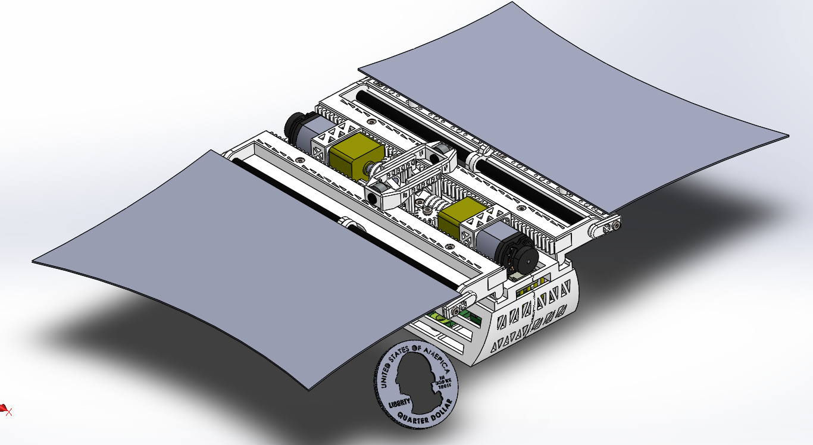Tenth Prototype with Wings and American Quarter for Scale
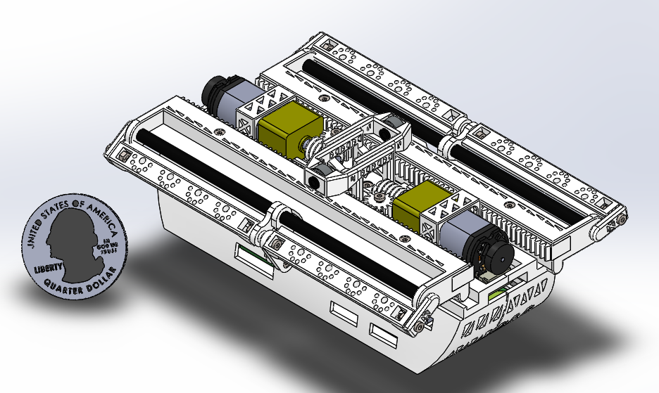Tenth Prototype with American Quarter for Scale - Isometric View
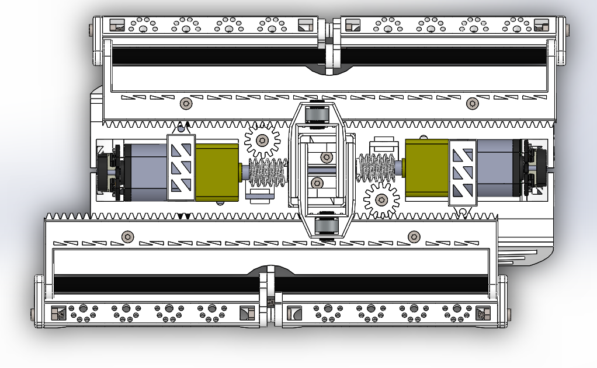Tenth Prototype - Top View
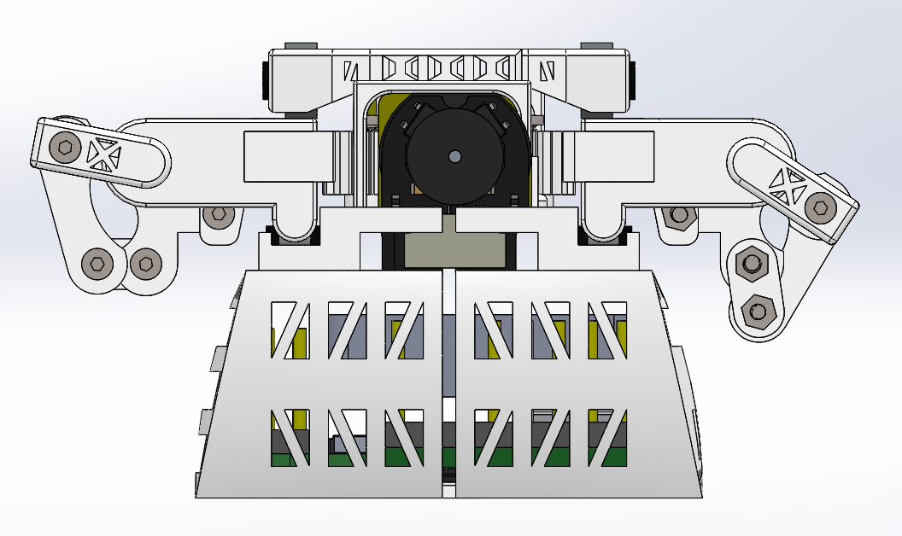Tenth Prototype - Front View
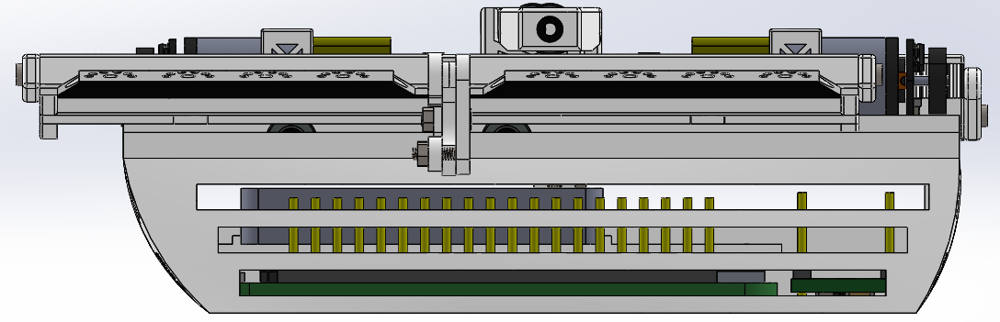Tenth Prototype - View of Bearings
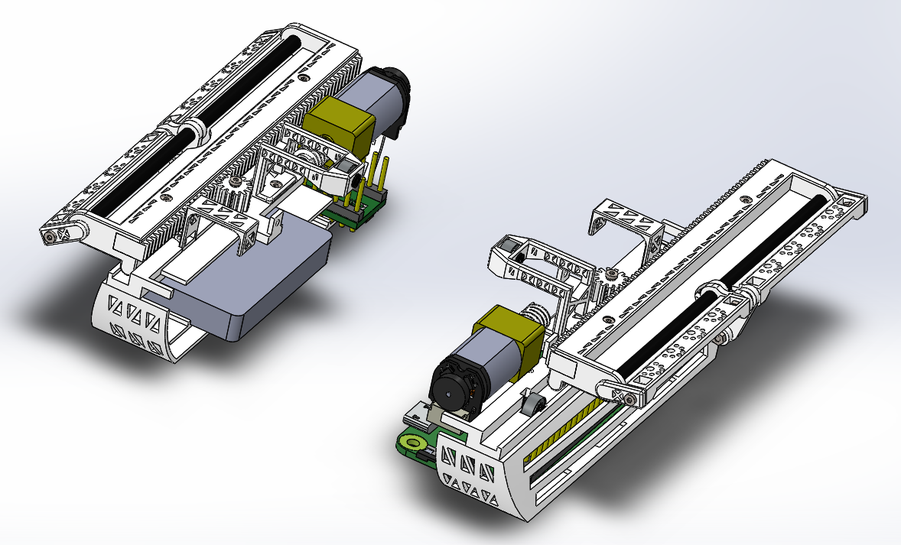Tenth Prototype with Electronics Storage Base Separated
Gear Spacing Test
Pleased with how the design was coming together in SolidWorks, I decided it was time to begin 3D printing prototypes. The first test was to confirm whether the gear science I was using from Shigley's Mechanical Engineering Design to determine how far apart to space the gears was correct. To do this, I designed a large piece to hold all the gears at the distances I'd calculated. After printing out the piece and mounting all the injection-molded gears we'd purchased off Amazon, the gear train moved smoothly. Success!
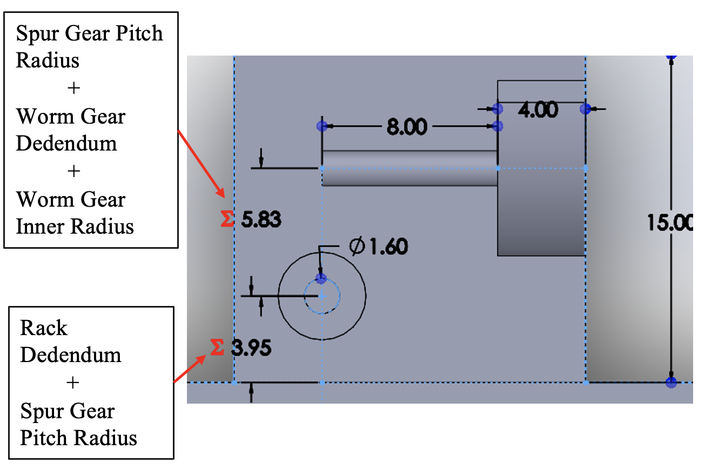Equation-Based Dimensions for Solidworks Model of Gear Spacing Test Piece
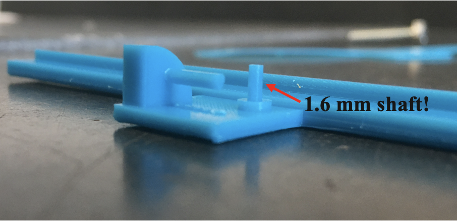3D Printed Gear Spacing Test Piece
Successful Test
3D Printing Worm Gears
The injection-molded worms we had purchased were slightly too small for the motor shafts. It would have likely been possible to drill a slightly larger hole in the worm, but then the worm walling would be thinner than half a millimeter. Given my success making spur gears, I decided instead to design worms in SolidWorks with the help of Shigley's and then 3D print them. This worked surprisingly well, at least at making nice looking worms. Unlike the spur gears which rely on rolling contact between one another, the spur gear teeth making contact with the worm must slide along its threads. Given the rough surface quality of my 3D prints, whether this sliding action was attainable with reasonable levels of torque was a major concern. To ensure the worm fit snugly on the motor shaft, I added a small clearance in the SolidWorks design and then fine tuned the fit of the motor shaft to the worm using a file.
Worm Test Print
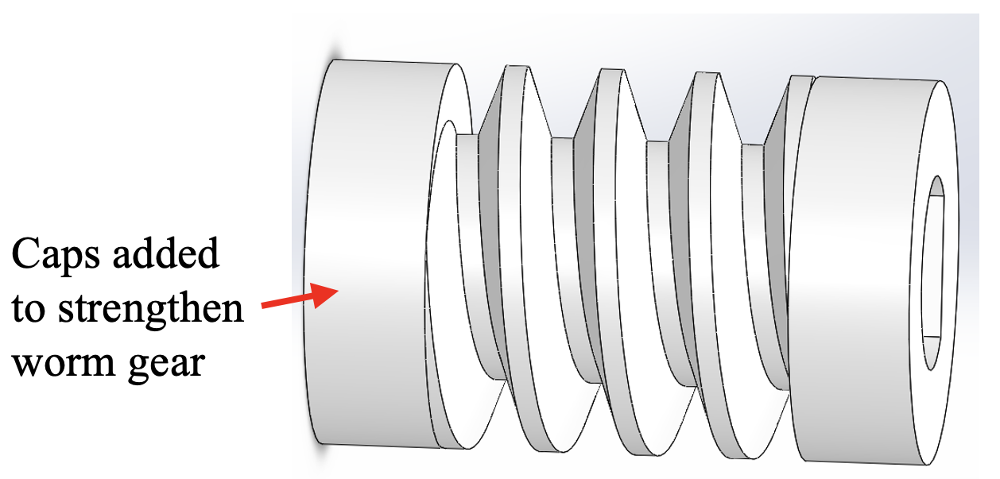Final Design of Worm
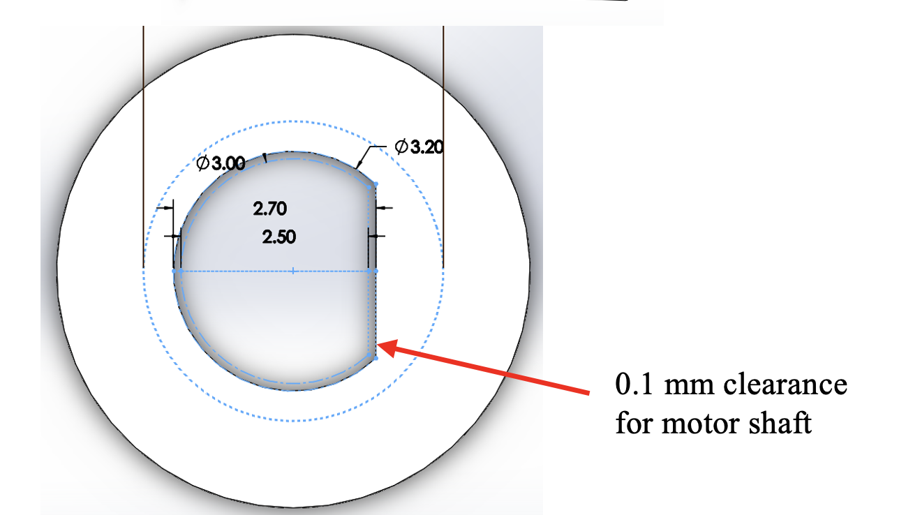Motor Shaft Clearance
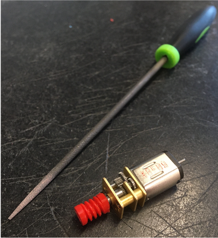Worm Mounted on Motor
Eleventh Prototype
Seeing the large electronics storage compartment of the robot made Professor Woodward quite concerned that I was trying to build a flying brick. He recommended I instead try to mount the electronics to small standoffs on the base and then figure out how to enclose these electronics with some minimal layer of protection and support. As a result, I removed the base completely. To increase the distance over which the wings could be shifted and thus the flight performance capability of the robot, I extended the wing mount pieces to equal the full length of the commercial racks we had purchased (about 125 mm).
I simplified the design of the upper bearing capture pieces to take up less space and be a part of the body rather than being fastened on separately. I also redesigned the motor holder pieces to be a part of the body rather than being fastened on separately. To install the motors, I would deflect the motor holder pieces slightly away from the motor so that the motor could slide in place with the motor holder pieces then clamping in behind the gearbox when I released my grip. To further secure the motors in place, a nut and bolt could then be placed through the pair of motor holder pieces for each motor. This idea had good potential given its simplicity, but during my first test print of the base, one of the motor holders snapped off during installation. It was interesting to note how well the 3D printed plastic robot body from this test print damped the vibrations generated by the motors.
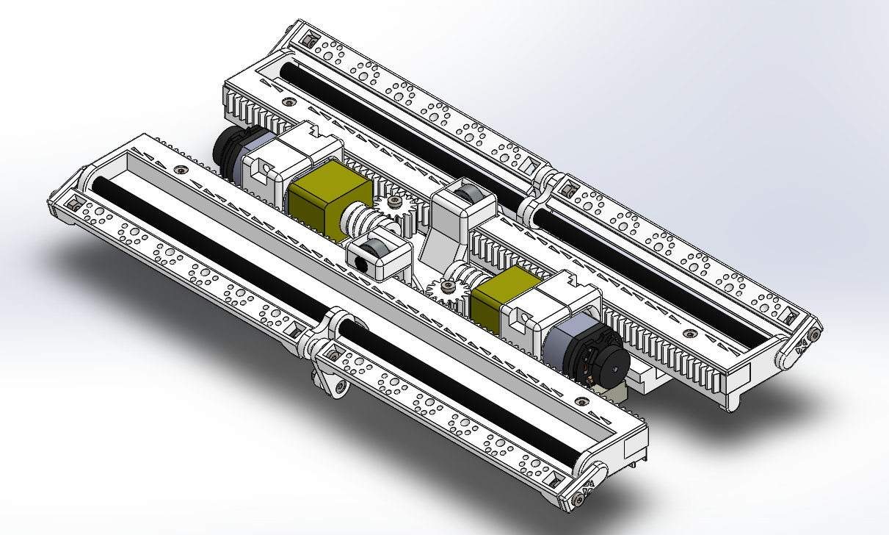Eleventh Prototype - Isometric View
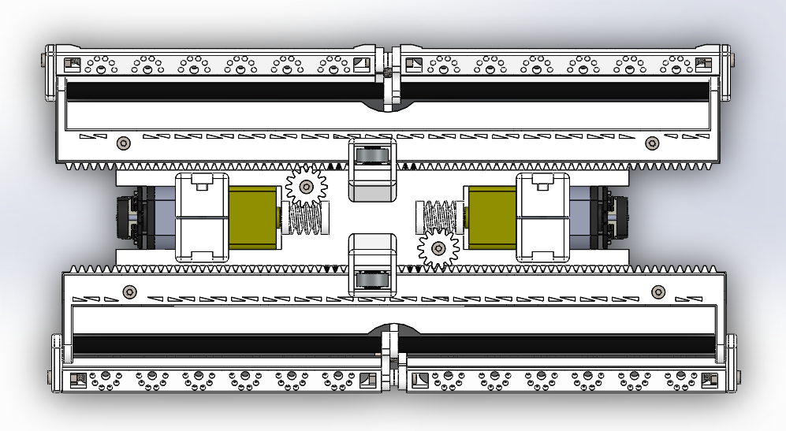Eleventh Prototype - Top View
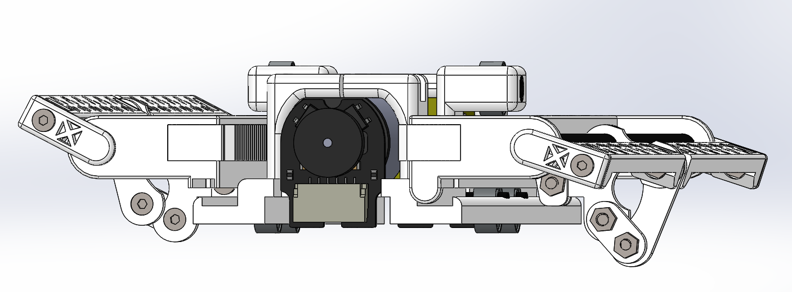Eleventh Prototype - Front View
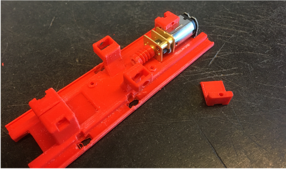Motor Holder Snapped Off During Installation
Motor Vibration Damped by Robot Body
Twelfth Prototype
With just the single central upper bearing capture for each wing, I realized that the wing shift capability was not the full rack length and was actually much more limited. If the rack was slid past the upper bearing capture, it would fall off. Noting the similarities between the motor holder and upper bearing capture pieces, I decided to merge these structures together thereby also adding a second upper bearing capture. I then added another lower bearing for each wing to ensure the wings remained stable as they moved between different sets of bearings. These additional bearings significantly increased the attainable wing shift distance. Removing the upper bearing captures also had the added benefit of allowing me to narrow the body further.
Working off of Professor Woodward's advice, I mounted the electronics on small offsets below the base of the robot body. The Pi was secured with bolts through the mounting holes on the board and the motor driver carrier was secured with slotted pieces the board could clip into fitting over the thickness of the board.
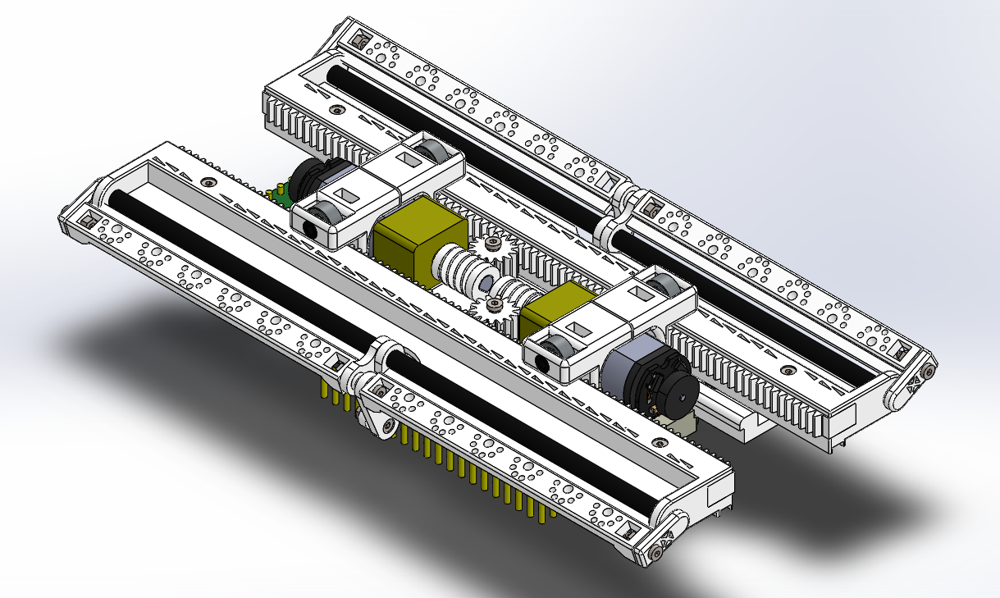Twelfth Prototype - Isometric View
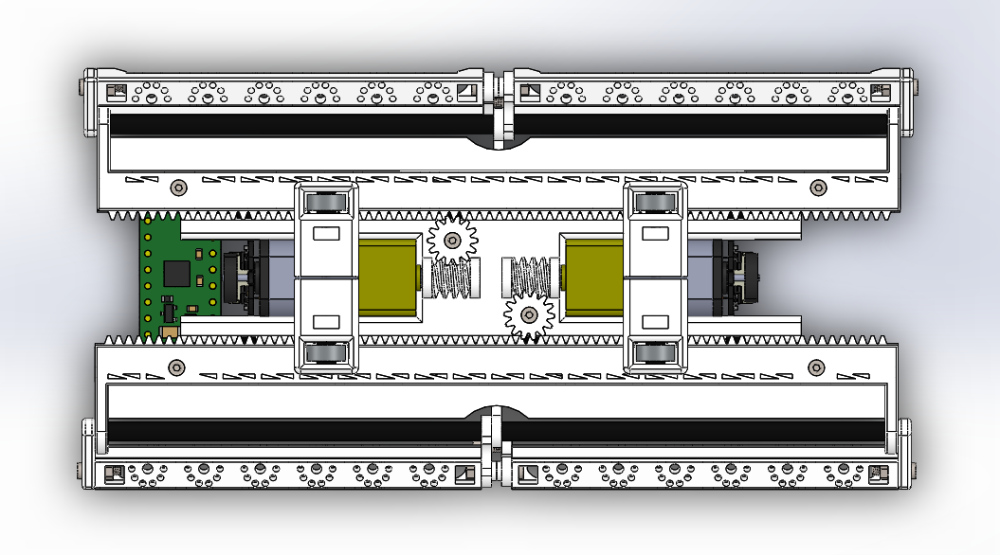Twelfth Prototype - Top View
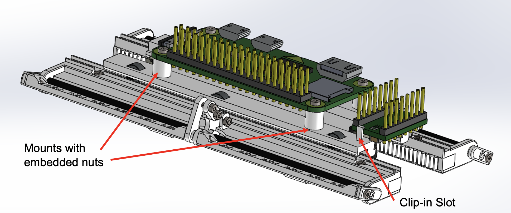Twelfth Prototype - Bottom View
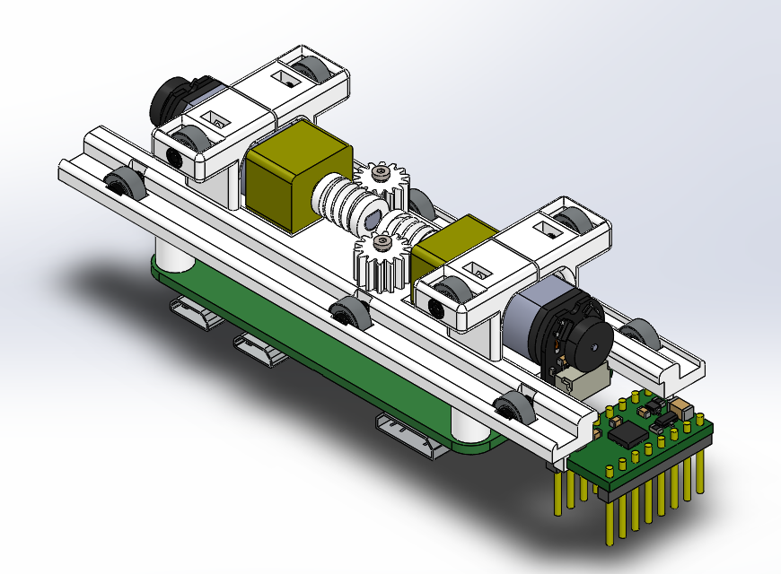Twelfth Prototype with Base Only
Thirteenth Prototype
Seeing as one of the motor holder pieces broke off during the installation of the motors on the 3D printed base, I went to redesign the motor holder pieces to be stronger. First, I decided to remove the fastener holes through the motor holder as even just the one motor holder piece that remained after the other had broken off had been sufficient to hold the motor in place. Second, I explored different support structures that I could use at the bottom of the motor holder to reduce stress concentrations while allowing the motor holder to still deflect the same amount. This way I could still easily bend the motor holder pieces back to install the motors, but hopefully the motor holder pieces wouldn't break off.
Simultaneously setting up the electronics for the robot, I had come to realize that the encoders would need a dedicated microcontroller to count encoder ticks as the general purpose operating system (and single core processor) of the Raspberry Pi Zero W prevented it from being able to do so. To accomodate this additional microcontroller (arduino pro micro), I added another pair of clip-in slots below the base of the robot body.
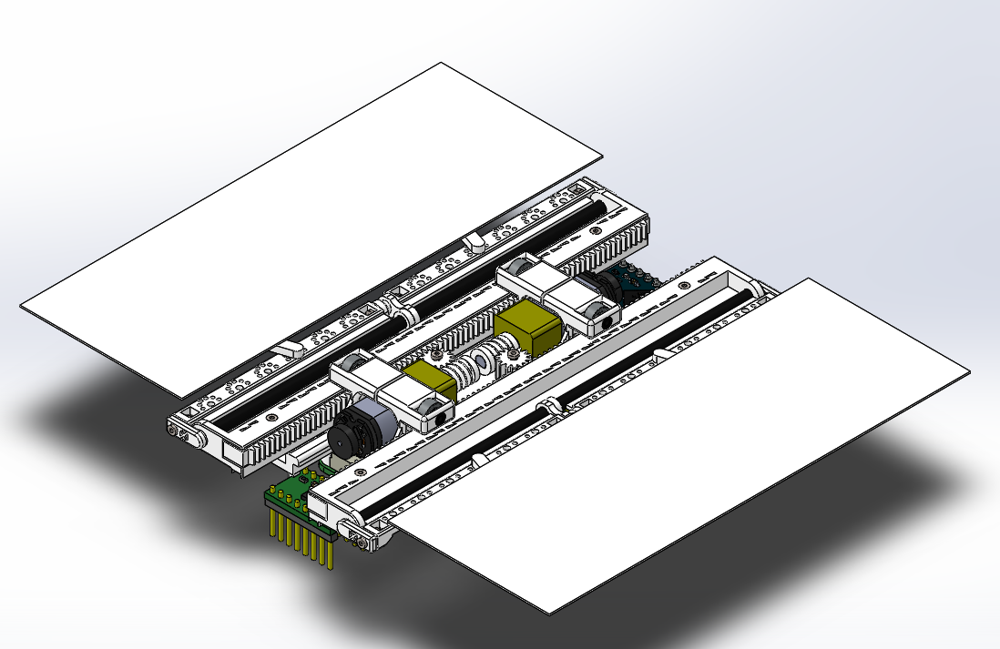Thirteenth Prototype with Wings
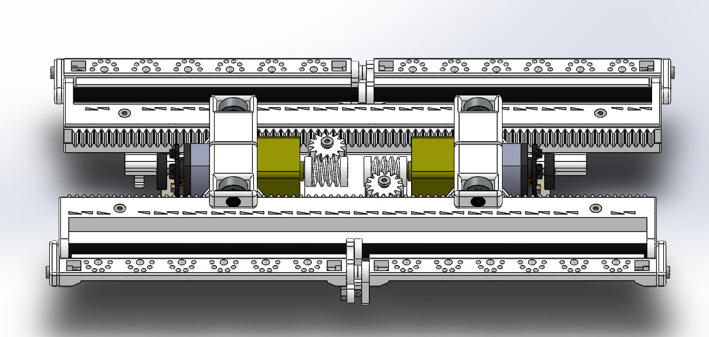Thirteenth Prototype with Body Only
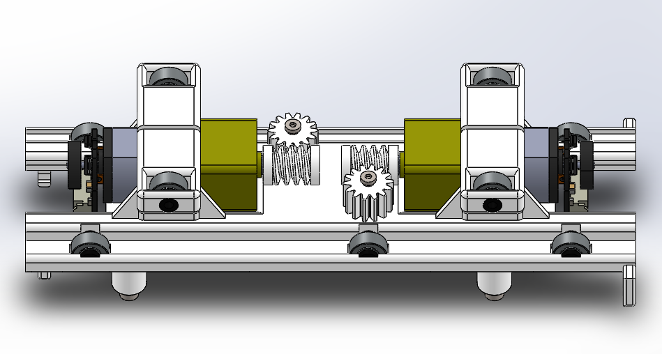Thirteenth Prototype with Base Only
I selected a support structure for the motor holder pieces using an iterative FEA process. I added fixture conditions across the base of the robot body and a 5 lb vertical load at the outside edge of the motor holder piece where I would push down during motor installation to deflect the motor holder pieces outward. The exact load of 5 lb wasn't important, rather I was looking at trends as I went between simulations for different motor holder support structures. The eventual support structure that I selected—triangular slats at either side of the motor holder—reduced the overall stress significantly while having a negligible effect on the deflection.
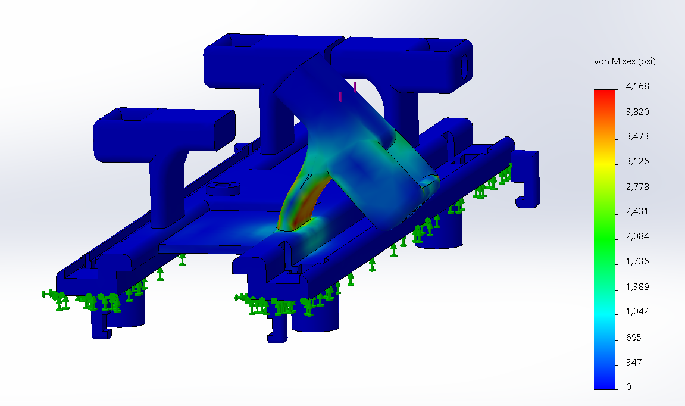FEA of Original Motor Holders - Von Mises Stress Plot
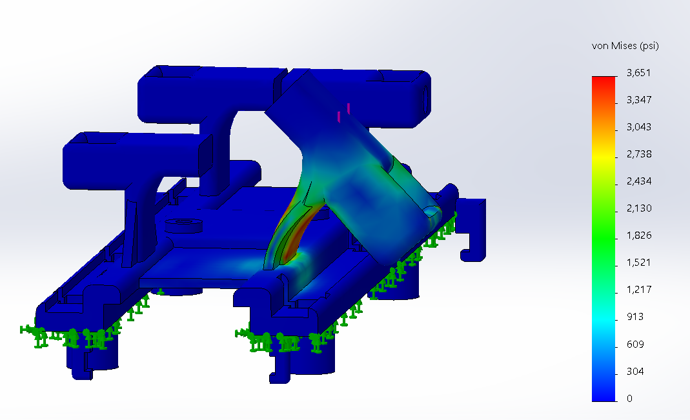FEA of New Motor Holders - Von Mises Stress Plot
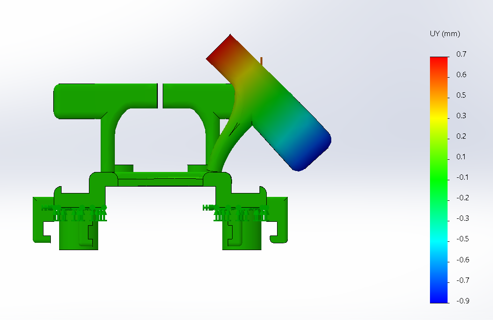FEA of Original Motor Holders - Vertical Deflection Plot

FEA of New Motor Holders - Vertical Deflection Plot
With this new motor holder design, the motor holder pieces survived motor installation. I then tested driving the spur gears with the worms mounted on the motor shafts. Since I was already 3D printing the worms, I decided to also print the spur gears. Given how rough the surface quality of the 3D prints were and the brittle nature of the PLA I was using, I expected the motors to stall out and then rip the gears apart. I was pleasantly surprised to see that the gears ran together at a number of different duty cycles. My only concern was that the bolt and nut fixture for the spur gear was too loose causing the spur gear to move in and out of contact with the worm. I think this drawback was inherent to the nature of the fastening method for the spur gear. The answer was not so simple as to just tighten the bolt as that would then prevent the spur gear from being able to rotate at all.
Worm to Spur Gear Test
Having been successful testing the robot body, it was time to start trying to incorporate the racks and attached wing connector structures. I printed out several different parts to test both how well they interfaced with one another and what level of detail was attainable with the 3D printer. I came to realize that there were some issues with tolerancing in my design where I hadn't taken into account the fact that the 3D printer wasn't perfectly consistent in its print quality. To address this I went back into the design and added small gaps between interfaces so that the parts would fit as expected. In my experience, I'd learned that 0.2 mm was the lucky number for most interfaces that were going to be in contact with one another. In terms of how small I could make prints, I was impressed with the precision of the relatively cheap 3D printer. Although some areas fused over that shouldn't have and some areas failed to fuse that should have, for the most part the printers stood up to their reported 0.1 mm accuracy.
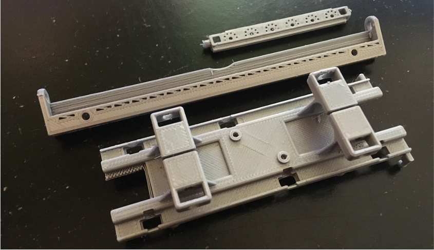Test Print Parts
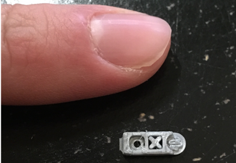Small Print - Cap on Limb Connector Piece
Fourteenth Prototype
After printing a number of test parts from my SolidWorks design, I fell under the impression that a four bar linkage was too much complexity for a first shot at a working prototype. Furthermore, it would be difficult to consisently set specific dihedral/anhedral angles using the four bar linkage. Consequently, I decided to return to the five preset hole arrangement for dihedral/anhedral angle adjustment. I also made slight tolerance adjustments given what I'd learned from the last test print with certain parts not interfacing as expected. The electronics are hidden in the model below so as not to distract from the rest of the model.
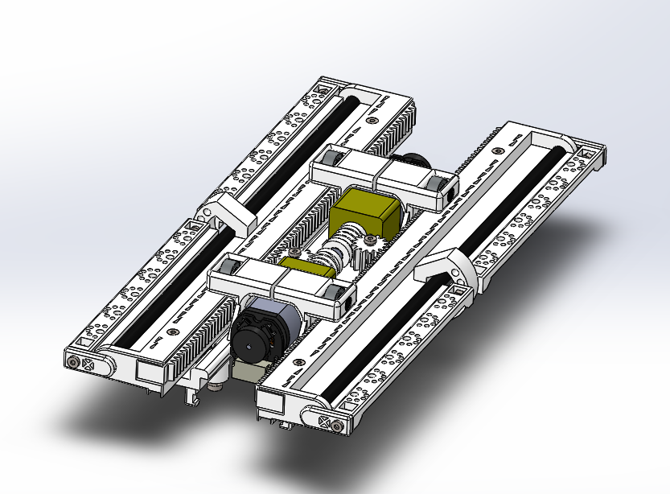Fourteenth Prototype
Using this new design, I printed another prototype. Since I had successfully used 3D printed spur gears with the worms in the last printed prototype, I decided to also print the rack. As a tradeoff for the good print quality, there was a lot of support material I had to remove from the parts. This support material is much less dense than the parts themselves and just used to support the part during printing as layers are added one on top of the next. To remove the support material, I spent an hour or so carefully picking it away using wire cutters, pliers, and tweezers. Despite my care to avoid applying too much force when removing the support material, I still managed to rip off several of the clip-in slots for the electronics boards on the base of the robot body. Those clip-in slots would need to be strengthened in later designs.
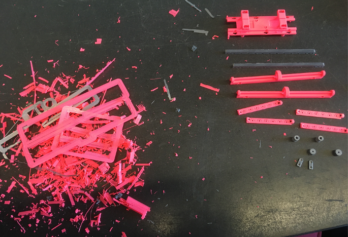Parts Printed and Support Material Removed
I prepared the short sections of carbon fiber tubing—used to mount the bearings—for this prototype by cutting sections off the long carbon fiber tubes we'd purchased online. To cut the carbon fiber tubes, I used the edge of a file to grind off a piece all the while constantly irrigating with water so as not to produce too much toxic carbon fiber dust.

Cutting Carbon Fiber Tubes
When I went to load the carbon fiber tubes I'd cut into the 3D printed robot body piece, I realized that the holes on the robot body for the carbon fiber tubes were slightly too small. Instead of reprinting the whole body, Professor Woodward had the insightful recommendation to just widen the hole with a drill press. This worked splendidly!
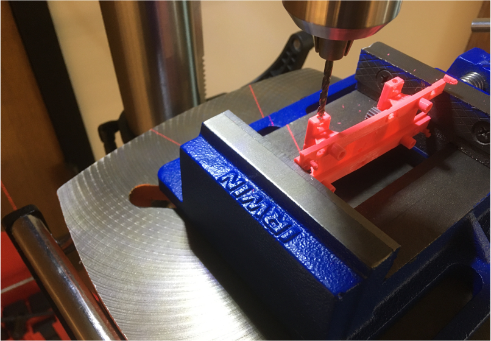Widening Bearing Shaft Holes with Drill Press
With the holes widened, I loaded the bearings into their respective locations on the robot body. The rack I had printed didn't fit so well into the rack holder piece, forcing the rack holder to bulge to accommodate the rack. This was likely the result of tolerancing issues between the rack and rack holder pieces. To help the rack fit better, I did my best to file down the interior of the rack holder to make more space for the rack. I encountered further tolerancing issues when I went to mount the rack holder inbetween the bearing capture system. The rack holder was held much too tightly and was forcing the rack against the motor holder pieces, causing the rack to rub against the robot body as it slid back and forth. This made it nearly impossible to move the rack as I attempted to do so by hand.
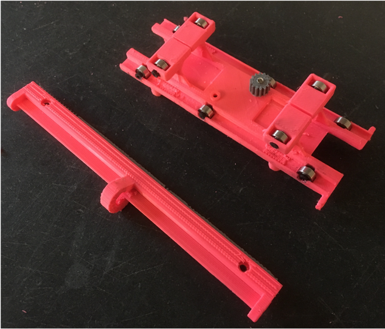Bearings Assembled on Body
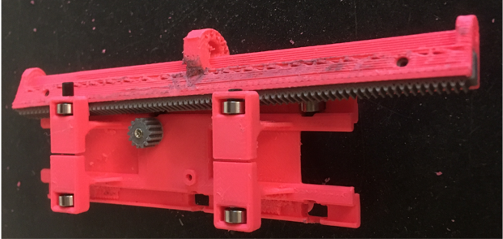Rack in Bearing Capture System
Fifteenth Prototype
To address the problems I noted after printing the last prototype, I thickened the clip-in slots for the electronics boards so they wouldn't tear off when I removed the support material and attempted to add more space at interfaces to address some of the tolerancing issues I had noted with the bearing shaft holes, rack, and rack holder. In short, my modifications were not successful. This was likely because the adjustments I made were too minor to address the full severity of the issues.
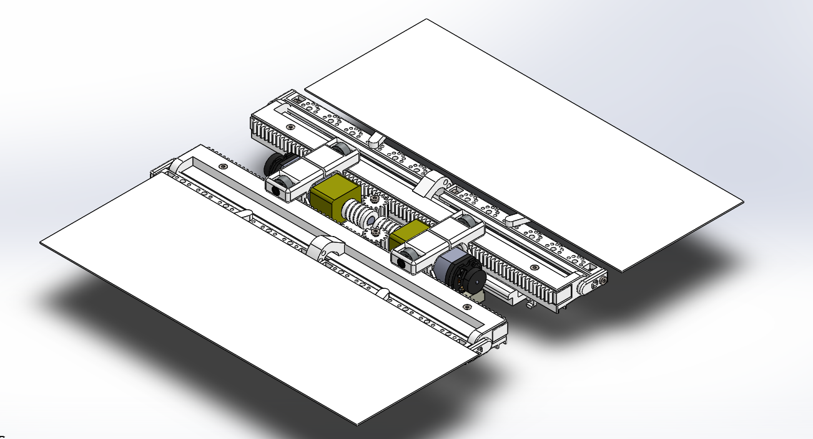Fifteenth Prototype with Wings
In the last prototype, the hexaganol cutout on the base of the robot used to embed the nut holding the bolt that passed through the spur gear was too small for the nut to fit in. To ensure the nut would fit this time, I increased the gap between the nut and hexagonal cutout in the SolidWorks design. Although the nut could now fit into the hexagonal coutout, it spun freely since the cutout was too large thereby defeating the original intent of using the hexagonal cutout to fix the orientation of the nut.
Embedded Nut Loose
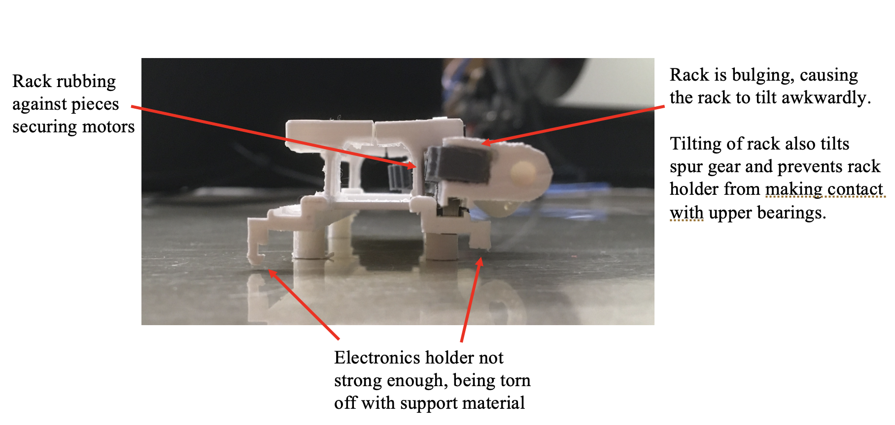Diagnosis of Problems with Prototype
Manual Rack Motion Test
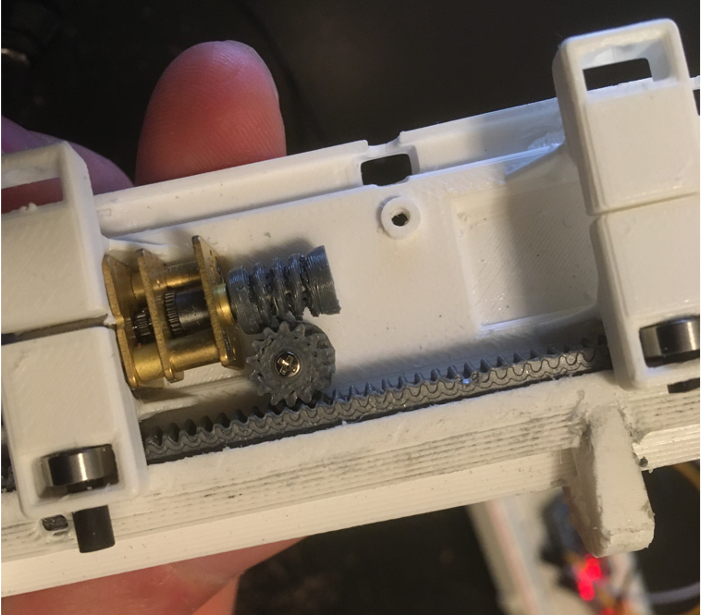Gear Train Fully Assembled
Motor Driven Rack Motion Test
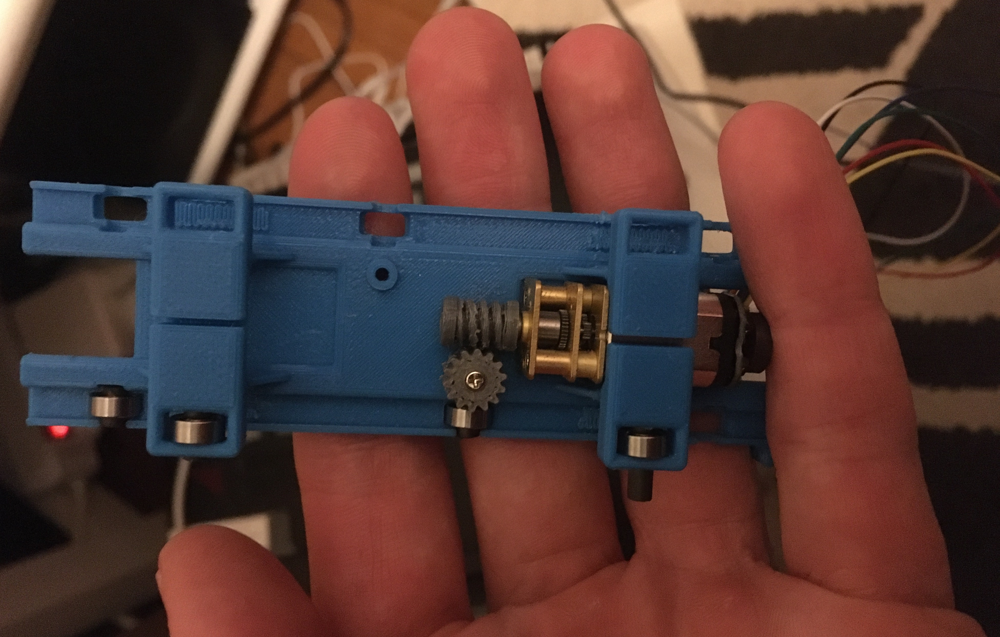Second Print Addressing Tolerance Issues
Problems with Spur Gear Fastening Method